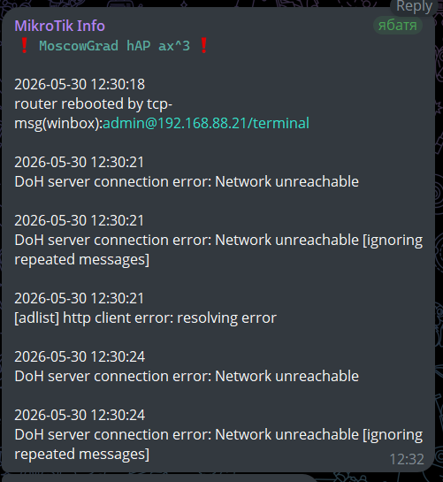

Log events Telegram Informer
RoS v7 and Telegram
Telegram servers are protected by Cloudflare, which enforces complex TLS 1.3/ECH handshakes. The fetch utility in v7 has a very short hardcoded internal timer for completing the cryptographic handshake phase. Due to DPI inspections the packets could arrive with a slight delay
Also, fetch in v7 tries to resolve api.telegram.org in all accessible addresses, including IPv6 (AAAA records). Even you have no IPv6, Cloudflare returns IPv6-addresses. fetch tries to start handshake over IPv6, waites for timeout, then fallbacks to IPv4 and starts new handshake. At this moment internal timer timeouts, and fetch drops error handshake timed out (6)
Specs
- Created to post messages to dedicated topic of the specified supergroup telegram instance
- Default filter:
logsBuffervariable- filter
topics~"(error|critical|netwatch)" || message~"([fF]ailure|router rebooted|checkRoSUpdate)"
- Default ignoring filter:
ignoreInLogvariable- ignoring messages keywords:
static dns entry changedchanged script settingsHTTPchanged scheduled script setting
- NO time-format related troubles, mikrotik internal function
:totimeused - Executes every
60seconds - Sends messages only if
api.telegram.orgis avaiable - Uses limit to
4096message symbols - Uses
HTMLsyntax for messages
Logic
START
|
|─ [1] Scheduler exists? → NO: create scheduler (interval=60s)
|
|─ [2] Telegram available? (resolve api.telegram.org)
| |─ NO → exit (silent)
| |─ YES → continue
|
|─ [3] Get cursor (last event time) from scheduler comment
| |─ if empty → use "1970-01-01 00:00:00"
|
|─ [4] Find logs matching: error|critical|netwatch|failure|router rebooted|checkRoSUpdate
|
|─ [5] Filter logs:
| |─ ignore: "static dns entry changed", "changed script settings", "HTTP", "changed scheduled script setting"
| |─ skip events older than cursor
|
|─ [6] Build message (max 4096 chars)
| |─ header: "⚠️ <code>identity board-name</code> ⚠️"
|
|─ [7] Any new logs?
|─ YES → POST to Telegram API (HTML parse_mode)
| |─ update cursor (save last event time to scheduler comment)
|─ NO → exit (silent)
END
Example

How To Use
Add as script with name logEventTGInformer
- policy: read, write, test
- do not require permission: no
- set your correct values instead of TOKEN, CHATID, TOPICID
known issue
log text parser failes for keyword HTTP
so HTTP keyword added to ignore filter
If telegram is blocked
allow MikroTik to access api.telegram.org via VPN
(well-configured VPN required)
commands
# allow MikroTik to connect api.telegram.org by itself
# example with DNS FWD and vpn_out routing table
/ip dns static
add address-list=to_VPN_FWD comment="Messengers - Telegram - used by router itself" disabled=no match-subdomain=yes name=api.telegram.org ttl=1d type=FWD
/ip firewall mangle
add action=mark-connection chain=output comment="MikroTik itself to vpn step 1" connection-mark=no-mark dst-address-list=to_VPN_FWD dst-address-type=!local \
new-connection-mark=self_to_vpn
add action=mark-routing chain=output comment="MikroTik itself to vpn step 2" connection-mark=self_to_vpn new-routing-mark=vpn_out passthrough=no
Code
# ===================================
# logEventTGInformer v2 | by xdenb43
# 30.05.2026:
# - Fixed, Optimized & Internet-aware
# - switch from unstable markdown to html format
# tested on
# - RoS 7.23
# ===================================
# -----------------------------------
# CONFIGURATION
# -----------------------------------
:local scriptName "logEventTGInformer";
:local tgBotToken "$TOKEN";
:local tgChatId "$CHATID";
:local tgTopicId "$TOPICID";
:local tgUrl ("https://api.telegram.org/bot" . $tgBotToken . "/sendMessage");
:local mikrotId ("❗ <code>" . [/system identity get name] . " " . [/system resource get board-name] . "</code> ❗");
:local messageHeader ($mikrotId . "\n\n");
:local logsBuffer [/log find \
topics~"(error|critical|netwatch)" || \
message~"([fF]ailure|router rebooted|checkRoSUpdate)"];
:local ignoreInLog {
"static dns entry changed";
"changed script settings";
"HTTP";
"changed scheduled script setting"
};
# 4KB of text (4096 latin characters).
:local symbolsLimit 4096;
:local defaultTime "1970-01-01 00:00:00";
# -----------------------------------
# SCHEDULER
# -----------------------------------
# warn if schedule does not exist and create it
:if ([:len [/system scheduler find name="$scriptName"]] = 0) do={
/log warning "[$scriptName] Alert : Schedule does not exist. Creating schedule ....";
:delay 1s;
/system scheduler add name=$scriptName interval=60s start-time=startup on-event=logEventTGInformer policy=read,write,test;
/log warning "[$scriptName] Alert : Schedule created!";
}
# -----------------------------------
# PRE-CHECK: REAL TELEGRAM AVAILABILITY (ICMP)
# -----------------------------------
:local telegramAvailable false;
:if ([/tool ping api.telegram.org count=1] > 0) do={
:set telegramAvailable true;
} else={
:set telegramAvailable false;
}
# -----------------------------------
# MAIN PART
# -----------------------------------
:if ($telegramAvailable) do={
# CURSOR (time-based)
:local lastCursor [/system scheduler get [find name="$scriptName"] comment];
:if ([:len $lastCursor] = 0) do={
:set lastCursor ($defaultTime);
}
:local messageText $messageHeader;
:local eventCursor;
:if ([:len $logsBuffer] > 0) do={
:foreach line in=$logsBuffer do={
:local eventTime [/log get $line time];
:if ([:len $eventTime] != 0) do={
:local message [:tostr [/log get $line message]];
:local keepLog true;
# ignore filter
:foreach j in=$ignoreInLog do={
:if ($message ~ $j) do={
:set keepLog false;
}
}
:if ($keepLog && ([:totime $eventTime] > [:totime $lastCursor])) do={
:local tempResult ($eventTime . "\n" . $message . "\n\n");
# lenght limit check
:if (([:len $messageText] + [:len $tempResult]) < $symbolsLimit) do={
:set messageText ($messageText . $tempResult);
:set eventCursor $eventTime;
}
}
}
}
}
# send to telegram
:if ([:len $messageText] > [:len $messageHeader]) do={
:local fetchSuccess false;
:do {
/tool fetch \
url=$tgUrl \
http-method=post \
http-header-field="Content-Type: application/json" \
http-data=("{\"chat_id\":\"" . $tgChatId . "\",\"message_thread_id\":\"" . $tgTopicId . "\",\"text\":\"" . $messageText . "\",\"parse_mode\":\"HTML\"}") \
keep-result=no;
:set fetchSuccess true;
} on-error={
# Telegram delivery failed (HTTP error or SSL timeout). Retrying next turn
:set fetchSuccess false;
}
:if ($fetchSuccess) do={
/system scheduler set [find name=$scriptName] comment=$eventCursor;
}
}
}